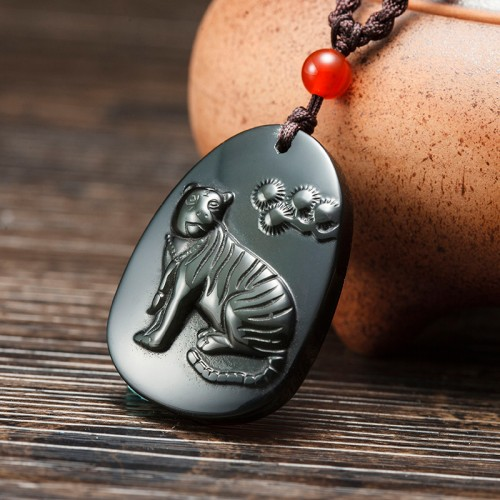

Tips：农历生肖运势即将进入2018年狗年，属狗2018年运势及运程抢先看，新年早开运，狗年求吉祥！
属狗2017年运势及运程详解
出生年份：2006、1994、1982、1970、1958、1946年。
属狗的年龄查询：属狗的今年多大
属狗人2017年事业运势
子玉风水大师点评：看清形势 改善人缘
生肖属狗的人，进入2017年丁酉鸡年，今年因为命宫中有众多凶星汇集，而且酉戌相害，为害太岁，也是犯太岁的一种，所以流年运势崎岖，必须步步为营，切勿轻举妄动，以免摔得一蹶不振！因有「年杀」凶星照命，警示今年容易被人蒙蔽欺骗，所以必须带眼识人，以免堕入别人的圈套。工作方面，今年将会出现不少变卦，倘若看不清楚形势变化，便很可能因为迷失方向而惨被淘汰！故此今年必须冷眼旁观，谋定而后动，以免受制于人！此外，并需尽量保持冷静克制，即使遇到任何挑衅，也千万不可意气用事，以免误中别人的激将计。属狗的人今年若想在工作方面会有较佳的发展，便一定要设法改善人缘！因为有「太阳」照命，预示今年若能努力不懈；年尾将可守得云开见月明。属狗的人，年尾两个月的运势将会比较年头畅顺得多！夏秋之间的农历六月及七月，诸多阻滞，必须全力以赴，切勿掉以轻心，以免事业根基动摇。今年工作进展欠佳的月份，是农历二月、五月、六月、七月、十月及十一月；在以上这几个月期间，处理工作业务必须格外小心谨慎！今年工作进展较为畅顺的月份，是农历的三月、四月、九月以及十二月；好好把握时机冲破困境。鉴于属狗人在2017年害太岁，应及早请购【子玉风水化太岁增庆福袋】，以化解犯太岁之灾！

属狗人2017年财运精准预测
子玉风水大师点评：钱财易泄 慎勿借贷
属狗的人，今年害太岁，财运似是而非，反反复覆，时好时坏；正财收入尚可强差人意，但横财则千万不可强求，以免因贪而变损。今年钱财易泄难聚，故此理财必须格外小心谨慎，以免出现经济困难；此外并需尽量避免借贷、或替人担保借贷，否则便会后患无穷！今年投资难望有利可图，故此不宜因受人怂恿而轻率投资。年中很可能有盗窃之灾，请记紧钱财切勿露眼。今年财运低迷的月份，是农历的二月、五月、六月、七月及十月！农历五月慎防盗劫，六月慎防金钱圈套，七月尽量避免借贷。今年财运较佳的月份，是农历三月、四月、九月及十二月，好好把握时机开源节流。出门求财，可查一下今年财神方位，择吉日而行。
属狗人2017年健康运势
健康锦囊——慎保肝肾 平安是福
属狗的人，今年健康情况平平，除了要小心注意饮食卫生之外，并需慎防酒色伤身。因有「的杀」凶星照命，这警示健康容易出现问题，特别要注意肝和肾的保养；有毛病出现，便需立即延医诊治，切勿讳疾忌医。「天空」这颗凶星的出现，警示今年出门必须密切注意交通安全的问题，切勿贪时之快，更切勿醉后驾驶，以免后悔莫及。今年健康易出问题的月份，是农历正月、二月、六月及十月；农历七月紧记慎防水险。
属狗人2017年爱情婚姻运势
感情锦囊——酒色伤身 知所节制
属狗的和什么属相最配：属兔、属虎、属马。
属狗的人，今年感情特别丰富，对爱情有热烈渴求，所以今年感情生活多姿多采！因有「咸池」当凶星照命，这警示应尽量里远离美酒与女色，以防因为酒与色而破财伤身。此外，今年寻欢作乐切勿太放纵，必须有所节制，以免有如灯蛾扑火而惹火焚身。今年感情发展较佳的月份，是农历的三月、四月、五月、八月、九月及十二月，好好把握时机来培养情苗！但农历十一月很可能会出现诸多感情烦恼。
属狗的青少年2017年运势
今年读书学习情绪反复，以致成绩时好时坏；倘若未能收敛心神来专心温习，考试成绩便会远远落后于人。今年必须小心注意饮食卫生，以免肝脏容易出现问题。今年必须尽量远离损友，以免受其牵连拖累。
属狗的女性2017年运势
今年夫妇间易生口角，切勿太过斤斤计较，以免感情因而出现裂痕。今年必须量入为出，并且切勿借贷，以免泥足深陷。属狗的少女，今年对爱情特别渴求，但必须带眼识人，以免被甜言蜜语所骗而后悔莫及。
属狗人2017年吉祥物

属狗人2017年吉凶方位
属狗的人今年的三个生旺吉方，是西方、东南及西北；若能把睡床、工作台和沙发摆放在屋内这三个方位上，便可符合这生肖今年的风水趋吉之道，有助改善流年运程。倘若未能如此，最少亦要把这三种最重要的家具避开东方及北方，以符合避凶之道。以上所提出的吉凶方位，是纯以生肖属狗的人来计算；而与其它十二生肖无关，请勿混淆。
属狗人2017年幸运色
属狗的人今年的生旺颜色是灰、蓝以及啡色；若能利用这些颜色来布置房间、或配衬衣物，这会对改善流年运程大有帮助！属狗的人今年忌黄色及红色，最好能尽量避免使用。
属狗人2017年幸运数字
属狗的人今年的生旺数字是3及6。
抢先关注：属狗的人2018年运程
不同狗年出生的属狗人2017年运势详解
2006年属狗的人2017年运程
2006年出生的人，今年读书学习情绪反复，以致成绩时好时坏，需尽量收敛心神！并且需慎防被损友诱惑。
1994年属狗的人2017年运程
1994年出生的人，今年感情特别丰富，感情生活将会多姿多彩，但需防乐极生悲。带眼识人，以免受骗破财。94年属狗人今年若要化解太岁，增旺运势，可佩戴本站周易专家团队精心设计的增庆堂属狗2017吉祥物吊坠，该圣品图案为一只猛虎，项带文昌笔，采用高档彩虹眼黑曜石精雕而成，寓意您在2017年神兽护身，福气盈门，从而化解害太岁的负面影响，工作中信心十足，文思不凡，受贵人赏识提携。亦可同时佩戴增庆堂属狗六合贵人手链，更具功效。开车人士，可在爱车挂上一串增庆堂福禄双会琉璃挂件，以保行车安全。
1982年属狗的人2017年运程
1982年出生的人，今年处事必须看清形势，才再谋定而后动，以免迷失方向。设法改善人缘，以免寸步难行。82年属狗人今年若要化解太岁，增旺运势，可佩戴本站周易专家团队精心设计的增庆堂属狗2017吉祥物吊坠，该圣品图案为一只猛虎，项带文昌笔，采用高档彩虹眼黑曜石精雕而成，寓意您在2017年神兽护身，福气盈门，从而化解害太岁的负面影响，工作中信心十足，文思不凡，受贵人赏识提携。亦可同时佩戴增庆堂属狗六合贵人手链，更具功效。开车人士，可在爱车挂上一串增庆堂福禄双会琉璃挂件，以保行车安全。
1970年属狗的人2017年运程
1970年出生的人，今年夫妻间易生口角，慎防感情因而破裂。尽量远离酒色，以免因为酒色而破财伤身。70年属狗人今年若要化解太岁，增旺运势，可佩戴本站周易专家团队精心设计的增庆堂属狗2017吉祥物吊坠，该圣品图案为一只猛虎，项带文昌笔，采用高档彩虹眼黑曜石精雕而成，寓意您在2017年神兽护身，福气盈门，从而化解害太岁的负面影响，工作中信心十足，文思不凡，受贵人赏识提携。亦可同时佩戴增庆堂属狗六合贵人手链，更具功效。开车人士，可在爱车挂上一串增庆堂福禄双会琉璃挂件，以保行车安全。
1958年属狗的人2017年运程
1958年出生的人，今年财运似是而非，钱财易泄难聚，理财需格外小心谨慎，此外，并需慎防误中激将计。
1946年属狗的人2017年运程
1946年出生的人，今年必须密切注意肝和肾的保养，切勿讳疾忌医。出门需注意交通安全，切勿疏忽大意。
属狗人2017年每月运势
农历正月 公历2017年2月3日至3月5日
本月小心饮食，远离酒色
属狗的人今年运势平平，年初这个月乏善可陈；幸而虽然偶有阻滞，亦可逢凶化吉！工作进展迟缓，月尾还很可能停济不前！但时机未至，暂未可太急于求成！这个月因有「咸池」凶星出现在命宫中，警示健康易出毛病，特别要提防酒色伤身！在这段期间最重要的，是小心饮食，以免肠胃受损而后患无穷；此外，晚上切勿多流连在外。财运平平，新春玩乐只可小注怡情，千万不可重锤出击，以免后悔莫及！
农历二月 公历2017年3月6日至4月4日
本月诸多变卦，保持警觉
因为有「晦气」凶星照命，这个月的运势阴霾弥漫，暧昧不清，必须步步为营。工作环境将会有不少变化，而工作进展亦将会有不少变卦，很可能会有不知何去何从的迷失感！在这段期间最重要的，是要保持头脑清醒，一定先要看清楚形势才好付诸行动，切勿被表象迷惑。财运每况愈下，钱财易泄难聚，理财必须格外小心，以免经济出现危机。这个月出门必须注意交通安全，切勿贪快，更切勿醉后驾驶。
农历三月 公历2017年4月5日至5月5日
本月渐入佳境，良机涌现
这个月的运势反复向上，在迂回曲折之中，渐入佳境。年初两个月的阴霾至此消散无余，春风吹暖，正是奋发向上的大好时机。工作进展畅顺，事半功倍，而且将会有不少良机出现。在这段期间最重要的，是面对机会必须懂得抉择，看准机会便需果断地去采取行动，以免被别人捷足先登。财星高照，这个月财运亨通；非但正财收人大有增长，而且横财亦会有意外收获，月中很可能结识一位动人的异性。
农历四月 公历2017年5月6日至6月5日
本月吉星拱照，打铁趁热
农历三月及四月是全年运势最畅旺的一段时期，属狗的人若想今年事业有成，便必须好好把握这段时机。工作进展畅顺，而且得道多助，可以获得不少助力，更是如虎添翼！在这段期间最重要的，是打铁要趁热，乘着气势正旺便要奋力向前，切勿犹豫，更切勿退缩。财运依然畅旺，投资有利可图，但横财在月尾将会反复向下。健康良好，身心康泰，但需慎防病从口入。这个月易与异性擦出感情火花，情投意合。
农历五月 公历2017年6月6日至7月7日
本月蜚短流长，洁身自爱
这个月的运势反复向下，月初尚算平稳，但月中开始便会有诸多阻滞；而工作进展亦是先盛后衰，必须由始至终努力不懈，以免夜长梦多，功败垂成！而且蜚短流长，诸多口舌是非！在这段期间最重要的，是必须谨口慎言，洁身自爱，以免被人借题发挥而大受打击！财运反复，投资及赌博均可免则免，以免焦头烂额！并需锁紧门窗，慎防盗劫。这个月感情生活多姿多采，但切勿太过放纵，以免乐极生悲。
农历六月 公历2017年7月8日至8月7日
本月诸多困阻，沉着应变
这个月因为命宫中有众多凶星混杂，故此运势低迷，前途将会有诸多困阻，必须沉着应变。工作方面将会不断出现挑衅，但请记紧千万不可意气用事，以免误中别人的激将计！此外，并需尽量远离损友，以免受其拖累而遭逢无妄之灾！财星破损，正财横财俱不宜憧憬；而且还需提高警惕，慎防堕入金钱陷阱。因有「的杀」凶星照命，警示这个月健康容易出现问题，特别要注意肝和肾的保养，切勿讳疾忌医。
农历七月 公历2017年8月8日至9月7日
本月带眼识人，慎防水险
这个月的运势依然崎岖，工作进展仍会有诸多阻滞，必须步步为营，切勿轻举妄动！在这期间最重要的，是要带眼识人，凡事不可太过轻信别人，一定要问个清楚，以免被人蒙蔽欺骗！此外，并需改善人缘，以免被人孤立，财运依然低沉不振，所以理财仍需加倍小心，以免钱财大量流泄不止！这个月切勿借贷，或替人担保借贷，否则便会后患无穷。健康尚可，但请紧记慎防水险，游泳及钓鱼均需密切注意安全。
农历八月 公历2017年9月8日至10月8日
本月实事求是，改善不足
这个月运势略为回稳，虽然仍会有些困阻，但工作上大致回复正轨，而且人事纷争亦将逐渐平息，正是休养生息的时机，以便养精蓄锐准备下一轮的冲刺。在这段期间最重要的，是要实事求是，冷静客观地看清自己的不足之处，及早加以改善，以迎接未来的挑战。财运虽略有起色，但仍不是投资的好时机，暂以忍手为宜。健康大有起色，但必须远离烟酒及毒品。这个月易与异性擦出感情火花，甜蜜温馨。
农历九月 公历2017年10月9日至11月7日
本月福星古同照，逢凶化吉
这个月的运势大吉大利，因为命宫中福星高照，故可逢凶化吉，转祸为祥！困扰多时的工作难题至此可一一消除，而人事纷争亦烟消云散，必须好好把握时机。在这期间最重要的，是必须专心努力工作，争取表现，这时期的努力是绝对不会白费的！这个月财运转趋畅旺，投资有利，但横财浮沉反复，切勿沉迷。健康良好，但需小心照顾家中小孩的健康及家居安全，切勿疏忽。这个月感情大有进展，如鱼得水。
农历十月 公历2017年11月8日至12月7日
本月冷眼旁观，横财勿贪
这个月的运势急剧逆转，很多不如意事接连而来，必须先有心理准备，以免临时手足无措而一败涂地！工作上的人事纷争不停，前景暧昧不清，在这段期间最重要的，是必须冷眼旁观，谋定而后动，以免因为看不清楚形势而受制于人。这个月的财运一落千丈，除了理财必须加倍小心谨慎之外，并请紧记横财勿贪，以免因贪变贫。健康容易出毛病，慎防因感染风寒而令肝或肺受损，并需密切注意交通安全。
农历十一月 公历2017年12月8日至2018年1月5日
本月暗涌潜伏，未可急进
这个月的运势凶中带吉，故此工作进展时好时坏，暗涌潜伏，始终难以一气呵成；而且人事纷争并未完全平息下来，故此未可掉以轻心，以免大意失荆州！在这段期间最重要的，是要稳中求胜，未可急进，以免欲速不达而自招败辱。此外，并需尽量避免招惹小人。财运平平，正财收入稳定，但投资及赌博均未是其时！此外，并需小心看管钱财，慎防盗窃。感情会有诸多烦恼，但请紧记切勿因为儿女私情而耽误公事。
农历十二月 公历2018年1月6日至2月3日
本月晦气全消，全力以赴
属狗的人今年运势反复，吉凶参半，幸而年尾这个月「太阳」高照，故此阴霾一扫而空，晴空万里任翱翔，正是大展鸿图的良机！在这段期间最重要的，是处理业务必须全力以赴，务求精益求精，这样才可脱颖而出，勇闯新高峰。这个月财星高照，财运亨通，正是投资的良好时机，而且很可能幸运中奖。健康良好，但必须慎防酒色伤身，并需切戒暴饮暴食。这个月易得人缘，感情大有进展，情投意合。
2018年运程十二生肖运势：属狗2018年运势及运程
读过此篇文章的网友还读过：
☑ 属猪的人2017年运程